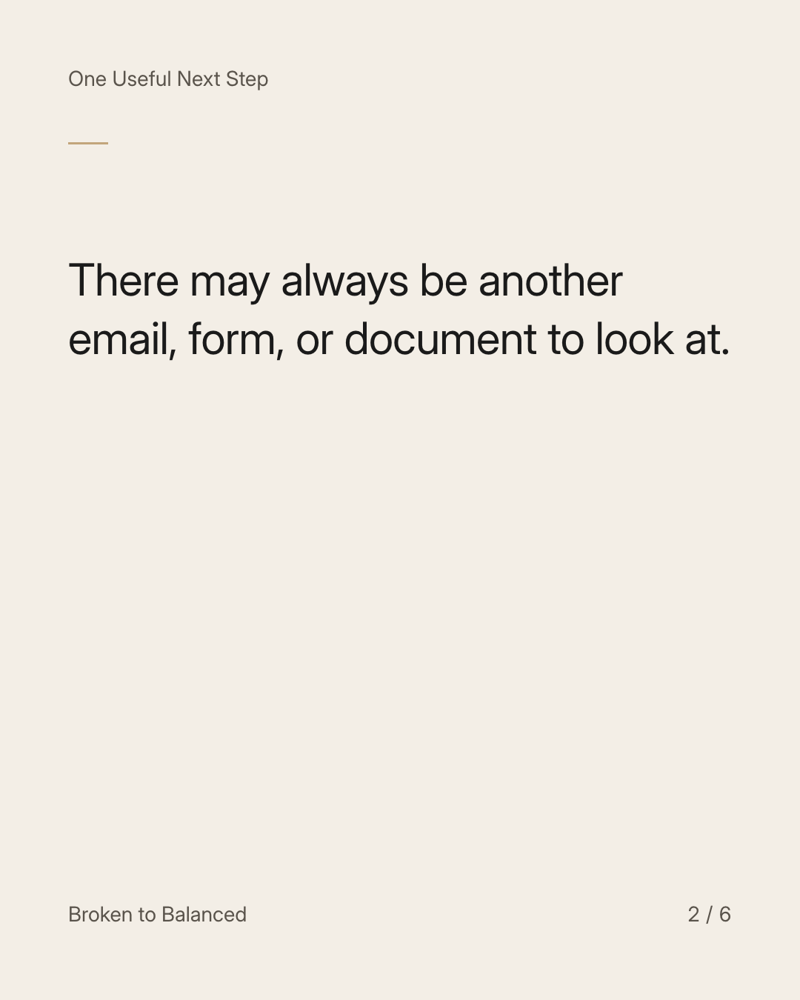
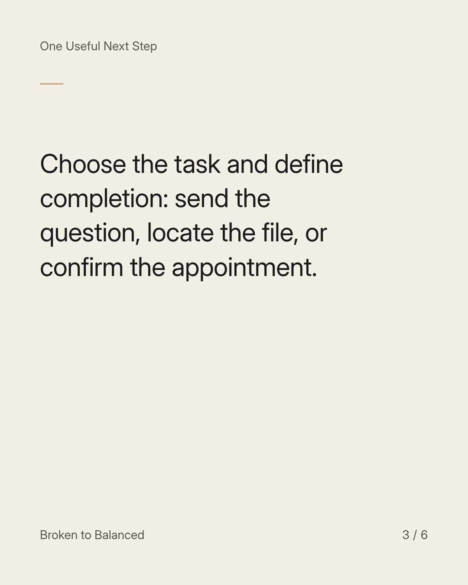
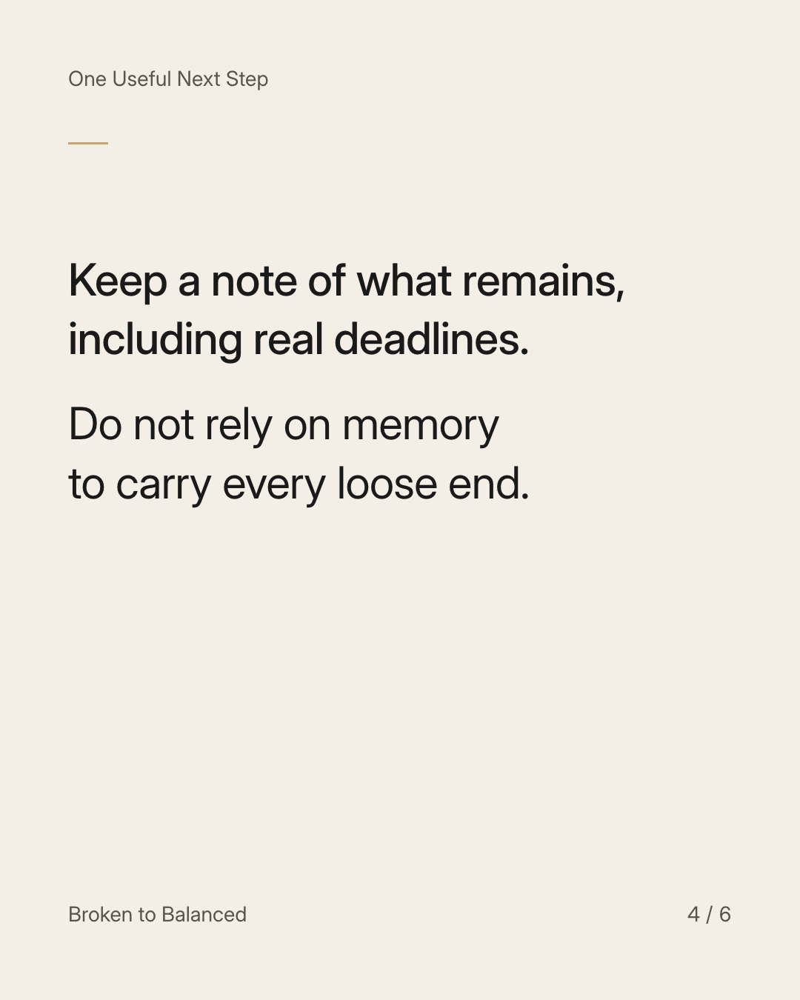
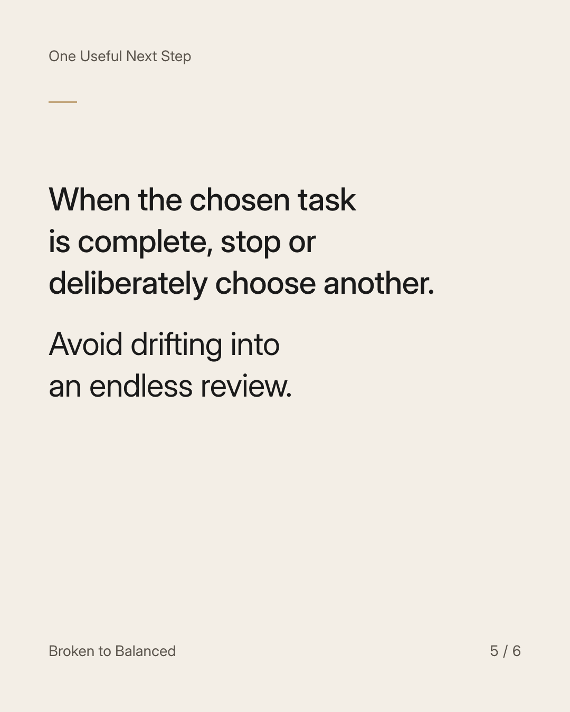
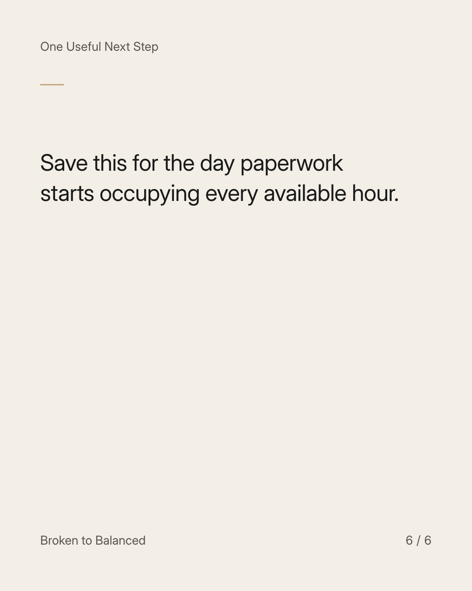

Exact text and accessibility text
Put a finish line on today's admin.
Slide 1 of 6. Put a finish line on today's admin.


Exact text and accessibility text
There may always be another email, form, or document to look at.
Slide 2 of 6. There may always be another email, form, or document to look at.


Exact text and accessibility text
Choose the task and define completion: send the question, locate the file, or confirm the appointment.
Slide 3 of 6. Choose the task and define completion: send the question, locate the file, or confirm the appointment.


Exact text and accessibility text
Keep a note of what remains, including real deadlines. Do not rely on memory to carry every loose end.
Slide 4 of 6. Keep a note of what remains, including real deadlines. Do not rely on memory to carry every loose end.


Exact text and accessibility text
When the chosen task is complete, stop or deliberately choose another. Avoid drifting into an endless review.
Slide 5 of 6. When the chosen task is complete, stop or deliberately choose another. Avoid drifting into an endless review.


Exact text and accessibility text
Save this for the day paperwork starts occupying every available hour.
Slide 6 of 6. Save this for the day paperwork starts occupying every available hour.
Exact caption
Plain-text fallback: select and copy the caption.